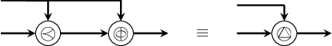
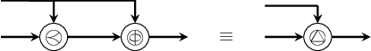
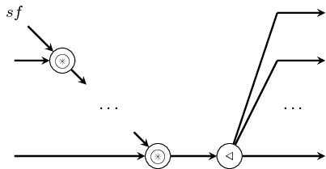
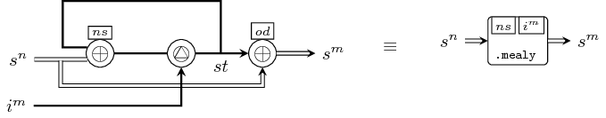

| Copyright | (c) George Ungureanu 2015-2017 |
|---|---|
| License | BSD-style (see the file LICENSE) |
| Maintainer | ugeorge@kth.se |
| Stability | experimental |
| Portability | portable |
| Safe Haskell | Safe |
| Language | Haskell2010 |
| Extensions |
|
ForSyDe.Atom.MoC
Description
This module defines the Model of Computation (MoC) layer, and is concerned in modeling the timing aspects of CPS. Its formal foundation is the tagged signal model [Lee98], and it follows it as closely as it is permitted by the host language, and with the adaptations required by the atom approach.
The MoC layer is defining a similar DSL as the classic ForSyDe modeling framework, in the sense that systems are described in terms of networks of processes operating on signals, and processes are only allowed to be instantiated using a finite set of process constructors. Process constructors capture its computational semantics accodrding to its respective MoC. MoCs are classes of behaviors dictating the semantics of execution and concurrency in a network of processes. The MoCs currently implemented in ForSyDe-Atom are shown in the instances section, and they can be used in designs by importing their respective modules:
The documentation in this module covers the internals of the MoC layer. While reading through is useful to understand some of the reasoning behind the modeling framework, this API is less likely to be touched by the casual user than the ones exported by each MoC above. For user-friendly modeling APIs consult the respective sub-modules.
MoCs are determined by a a signal's tag system. Based on how their tag systems are defined ForSyDe identifies MoCs as:
- timed where the tag system is a totally ordered set and, depending on the
abstraction level, \(t\in T\) might express a notion of physical time
(e.g. continuous time
CT, discrete eventDE) to the notion of precedence and causality (e.g. synchronousSY); - untimed, where T is a partially ordered set and \(t\in T\) is expressed in terms
of constraints on the tags in signals (e.g. dataflow, synchronous data flow
SDF).
Synopsis
- data Stream e
- module ForSyDe.Atom.MoC.Stream
- class Applicative e => MoC e where
- delay :: MoC e => Stream (e a) -> Stream (e a) -> Stream (e a)
- (-&>-) :: MoC e => Stream (e a) -> Stream (e a) -> Stream (e a)
- comb22 :: MoC e => Fun e a1 (Fun e a2 (Ret e b1, Ret e b2)) -> Stream (e a1) -> Stream (e a2) -> (Stream (e b1), Stream (e b2))
- reconfig22 :: MoC e => Stream (e (Fun e a1 (Fun e a2 (Ret e b1, Ret e b2)))) -> Stream (e a1) -> Stream (e a2) -> (Stream (e b1), Stream (e b2))
- state22 :: MoC e => Fun e st1 (Fun e st2 (Fun e a1 (Fun e a2 (Ret e st1, Ret e st2)))) -> (Stream (e st1), Stream (e st2)) -> Stream (e a1) -> Stream (e a2) -> (Stream (e st1), Stream (e st2))
- stated22 :: MoC e => Fun e st1 (Fun e st2 (Fun e a1 (Fun e a2 (Ret e st1, Ret e st2)))) -> (Stream (e st1), Stream (e st2)) -> Stream (e a1) -> Stream (e a2) -> (Stream (e st1), Stream (e st2))
- moore22 :: MoC e => Fun e st (Fun e a1 (Fun e a2 (Ret e st))) -> Fun e st (Ret e b1, Ret e b2) -> Stream (e st) -> Stream (e a1) -> Stream (e a2) -> (Stream (e b1), Stream (e b2))
- mealy22 :: MoC e => Fun e st (Fun e a1 (Fun e a2 (Ret e st))) -> Fun e st (Fun e a1 (Fun e a2 (Ret e b1, Ret e b2))) -> Stream (e st) -> Stream (e a1) -> Stream (e a2) -> (Stream (e b1), Stream (e b2))
- ctxt22 :: (ctxa, ctxa) -> (ctxb, ctxb) -> (a1 -> a2 -> (b1, b2)) -> (ctxa, a1 -> (ctxa, a2 -> ((ctxb, b1), (ctxb, b2))))
- (-*<) :: MoC e => Stream (e (Ret e b1, Ret e b2)) -> (Stream (e b1), Stream (e b2))
Signals
[Lee98] defines signals as ordered sets of events where each event is composed of a tag \(\in T\) and a value \(\in V\), where \(T\) defines a total or partial order. In ForSyDe a signal is defined as a sequence of events that enables processes to communicate and synchronize. Sequencing might infer an implicit total order of events, but more importantly it determines an order of evaluation, which is a key piece of a simulation engine.
In ForSyDe, sequencing is achieved using a Stream data type, similar to the one
described by [Reekie95]. In ForSyDe-Atom, signals
are streams that carry events, where each type of event is identified by a type
constructor. Hence the pseudo-Haskell definition for a signal would look like
below, where e is the type of an event which encodes a tag system through its
type constructor, and is member of the MoC class. Since, according to
[Lee98], MoCs are defined by tag systems, we can state
that any specific instance of a signal is describing (i.e. is bound to) a MoC.
type Signal a = exists e . MoC e => Stream (e a)
Defines a stream of events, encapsulating them in a structure
isomorphic to an infinite list [Bird87],
thus all properties of lists may also be applied to
Streams. While, in combination with lazy evaluation, it is
possible to create and simulate infinite signals, we need to ensure
that the first/previous event is always fully evaluated, which is
equivalent to ensuring the the monotonicity property in dataflow
systems. This translates in the following composition rule:
- non-causal feedback is forbidden
- also called "zero-delay" feedback loops, are caused by un-evaluated self-referential calls. In a feedback loop, there always has to be enough events to ensure the data flow.
This rule imposes that the stream of data is uninterrupted in order to have an evaluatable kernel every time a new event is produced (i.e. to avoid deadlocks), which is ther equivalent to ensuring continuity in dataflow systems. This translates in the following rule:
- cleaning of signals in a feedback is forbidden
- in other words, whenever a feedback composition occurs, for each new input at any instant in time, a process must react with at least one output event.
Constructors
| NullS | terminates a signal |
| e :- (Stream e) infixr 3 | the default constructor appends an event to the head of the stream |
Instances
| Functor Stream Source # | allows for the mapping of an arbitrary function |
| Applicative Stream Source # | |
| Foldable Stream Source # | provides folding functions useful for implementing utilities, such as |
Defined in ForSyDe.Atom.MoC.Stream Methods fold :: Monoid m => Stream m -> m # foldMap :: Monoid m => (a -> m) -> Stream a -> m # foldMap' :: Monoid m => (a -> m) -> Stream a -> m # foldr :: (a -> b -> b) -> b -> Stream a -> b # foldr' :: (a -> b -> b) -> b -> Stream a -> b # foldl :: (b -> a -> b) -> b -> Stream a -> b # foldl' :: (b -> a -> b) -> b -> Stream a -> b # foldr1 :: (a -> a -> a) -> Stream a -> a # foldl1 :: (a -> a -> a) -> Stream a -> a # elem :: Eq a => a -> Stream a -> Bool # maximum :: Ord a => Stream a -> a # minimum :: Ord a => Stream a -> a # | |
| Read a => Read (Stream a) Source # | signal |
| Show a => Show (Stream a) Source # | signal |
| Plottable a => Plot (Signal a) Source # |
|
| Plottable a => Plot (Signal a) Source # | For plotting |
| Plottable a => Plot (Signal a) Source # | For plotting |
| (Plottable a, Show t, Real t, Fractional t, Num t, Ord t, Eq t) => Plot (SignalBase t a) Source # | For plotting |
Defined in ForSyDe.Atom.Utility.Plot Methods sample :: Float -> SignalBase t a -> Samples Source # sample' :: SignalBase t a -> Samples Source # takeUntil :: Float -> SignalBase t a -> SignalBase t a Source # getInfo :: SignalBase t a -> PInfo Source # | |
| (Plottable a, Show t, Real t, Fractional t, Num t, Ord t, Eq t) => Plot (SignalBase t a) Source # | For plotting |
Defined in ForSyDe.Atom.Utility.Plot Methods sample :: Float -> SignalBase t a -> Samples Source # sample' :: SignalBase t a -> Samples Source # takeUntil :: Float -> SignalBase t a -> SignalBase t a Source # getInfo :: SignalBase t a -> PInfo Source # | |
This module re-exports all utilities on streams. These utilities are meant to be used with plotters or testbenches, but should never be used in designs under tests, as they do not carry formal semantics.
module ForSyDe.Atom.MoC.Stream
Atoms
These are primitive process constructors capturing an elementary behavior. By
themselves they are seldom used as-such, but rather as specific compositions of
atom patterns. For the MoC layer, atoms are defined only as type signatures, and
are overloaded by each instance of the MoC type class, as follows:
class Applicative e => MoC e where Source #
This is a type class defining interfaces for the MoC layer atoms. Each model of computation exposes its tag system through a unique event type which is an instance of this class, defining \( T \times V \).
To express all possible MoCs which can be described in this layer we need to capture the most general form of their atoms. Depending on the execution regime of a MoC, its atoms might or might not need additional parameters to determine the behavior for evaluating each argument. These additional parameters we call, in loose terms, as the execution context.
- execution context
- Additional information which, paired with a function, completely determines the behavior of a MoC atom (i.e. process).
\[ \Gamma \vdash \alpha^m \rightarrow \beta^n \simeq \Gamma_{\alpha,1} \times \alpha_1 \rightarrow ... \rightarrow \Gamma_{\alpha,m} \times \alpha_m \rightarrow (\Gamma_{\beta,1}\times \beta_1) \times ... \times (\Gamma_{\beta,n}\times \beta_n) \]
The left-hand side expression above shows the most general notation used to describe a function with m inputs of (possibly different) types \(\alpha\) and n outputs of (possibly different) types \(\beta\) executed in context \(\Gamma\). The right-hand side expression shows that in ForSyDe-Atom context is associated with each and every argument in order to enable the applicative mechanisms. Depending on the MoC, \(\Gamma_{\alpha,i}\) would translate to e.g.:
\[ \Gamma_{\alpha,i} \in \begin{cases} \emptyset, & \text{for all timed MoCs (e.g. SY, DE, CT)} \\ \mathbb{N}, & \text{for static variants of SDF}\\ \mathbb{N}^n, & \text{for CSDF}\\ S \times \mathbb{N} \rightarrow \mathbb{N}, & \text{where } S \text{ is a state space,} \\ & \text{in the most general case of untimed data flow} \end{cases} \]
One example of execution context is the consumption and production rates for
synchronous data flow MoCs (e.g. SDF). In this case the
passed functions are defined over sequences or partitions of events,
i.e. groupings of events with the same partial order in relation to a process
firing.
Although a more elegant approach of passing execution context would be using type-level arithmetics, this is a non-trivial task to implement in Haskell. This is why we chose the pragmatic approach of pairing a context parameter per argument, similar to the formula above, where:
- any function representing a partition of \(\alpha\) is operating on a recursive type, namely a list \([\alpha]\).
- to aid in pairing contexts with each argument in a function, the general purpose
ctxtutilities are provided (seectxt22). - this artifice is masked using the generic type families
FunandRet.
Associated Types
This is a type family alias \(^1\) for a context-bound function passed as an
argument to a MoC atom. It can be regarded as an enhanced -> type operator,
specific to each MoC.
\[ \Gamma_{\alpha,i} \times \alpha_i \rightarrow \beta \]
\(^1\) While hiding the explicit definition of arguments, this /implementation choice certainly has its advantages in avoiding unnecessary or redundant type constructors (see version 0.1.1 and prior). Aliases are replaced at compile time, thus not affecting run-time performance./
Methods
(-.-) :: Fun e a b -> Stream (e a) -> Stream (e b) infixl 5 Source #
The func atom is mapping a function on values (in the presence of a context)
to a signal, i.e. stream of tagged events.

(-*-) :: Stream (e (Fun e a b)) -> Stream (e a) -> Stream (e b) infixl 5 Source #
The sync atom synchronizes two signals, one carrying functions on values (in
the presence of a context), and the other containing values. During the
synchronization it applies the function(s) carried by the former signal on the
values carried by the latter. This atom defines a relation between two signals,
and a process created with it is monotonous, i.e. any new event in any of the
input signals triggers a reaction at the output.

(-*) :: Stream (e (Ret e b)) -> Stream (e b) infixl 3 Source #
Artificial utility which drops the context and/or partitioning yielding a clean signal type.
(-<-) :: Stream (e a) -> Stream (e a) -> Stream (e a) infixl 3 Source #
The pre atom prepends the prefix of the left signal operand (i.e. the first
event in timed MoCs, or the first n events in untimed MoCs) at the beginning of
the right signal operand \(^1\). This atom is necessary to ensure /complete
partial order of a signal and assures the least upper bound/ necessary for
example in the evaluation of feedback loops [Lee98].

\(^1\) this atom acts like the pre operator in the synchronous language
Lustre and for timed MoCs it behaves the same. For untimed MoCs though, the
length of the prefix of a signal is assumed to be the length of a signal,
since the API does not provide any other means to pass n as a parameter.
(-&-) :: Stream (e a) -> Stream (e a) -> Stream (e a) infixl 3 Source #
The phi atom manipulates the tags in a signal in a restrictive way which
preserves monotonicity and continuity in a process
[Lee98], namely by “phase-shifting” all tags in a
signal with the appropriate metric corresponding to each MoC. Thus it preserves
the characteristic function intact [Sander04].

The metric distance used for phase shifting is inferred from the prefix of the left signal operand, while right signal operand is the one being manipulated.
Instances
| MoC SY Source # | Implenents the execution semantics for the SY MoC atoms. |
Defined in ForSyDe.Atom.MoC.SY.Core Methods (-.-) :: Fun SY a b -> Stream (SY a) -> Stream (SY b) Source # (-*-) :: Stream (SY (Fun SY a b)) -> Stream (SY a) -> Stream (SY b) Source # (-*) :: Stream (SY (Ret SY b)) -> Stream (SY b) Source # (-<-) :: Stream (SY a) -> Stream (SY a) -> Stream (SY a) Source # (-&-) :: Stream (SY a) -> Stream (SY a) -> Stream (SY a) Source # | |
| MoC SDF Source # | Implenents the SDF semantics for the MoC atoms. |
Defined in ForSyDe.Atom.MoC.SDF.Core Methods (-.-) :: Fun SDF a b -> Stream (SDF a) -> Stream (SDF b) Source # (-*-) :: Stream (SDF (Fun SDF a b)) -> Stream (SDF a) -> Stream (SDF b) Source # (-*) :: Stream (SDF (Ret SDF b)) -> Stream (SDF b) Source # (-<-) :: Stream (SDF a) -> Stream (SDF a) -> Stream (SDF a) Source # (-&-) :: Stream (SDF a) -> Stream (SDF a) -> Stream (SDF a) Source # | |
| (Num t, Ord t, Eq t) => MoC (RE t) Source # | |
Defined in ForSyDe.Atom.MoC.DE.React.Core Methods (-.-) :: Fun (RE t) a b -> Stream (RE t a) -> Stream (RE t b) Source # (-*-) :: Stream (RE t (Fun (RE t) a b)) -> Stream (RE t a) -> Stream (RE t b) Source # (-*) :: Stream (RE t (Ret (RE t) b)) -> Stream (RE t b) Source # (-<-) :: Stream (RE t a) -> Stream (RE t a) -> Stream (RE t a) Source # (-&-) :: Stream (RE t a) -> Stream (RE t a) -> Stream (RE t a) Source # | |
| (Num t, Ord t, Eq t) => MoC (DE t) Source # | Implenents the execution semantics for the DE MoC atoms. |
Defined in ForSyDe.Atom.MoC.DE.Core Methods (-.-) :: Fun (DE t) a b -> Stream (DE t a) -> Stream (DE t b) Source # (-*-) :: Stream (DE t (Fun (DE t) a b)) -> Stream (DE t a) -> Stream (DE t b) Source # (-*) :: Stream (DE t (Ret (DE t) b)) -> Stream (DE t b) Source # (-<-) :: Stream (DE t a) -> Stream (DE t a) -> Stream (DE t a) Source # (-&-) :: Stream (DE t a) -> Stream (DE t a) -> Stream (DE t a) Source # | |
| (Num ts, Num tm, Real ts, Fractional tm, Ord ts, Ord tm, Eq ts) => MoC (CT ts tm) Source # | Implenents the execution semantics for the CT MoC atoms. |
Defined in ForSyDe.Atom.MoC.CT.Core Methods (-.-) :: Fun (CT ts tm) a b -> Stream (CT ts tm a) -> Stream (CT ts tm b) Source # (-*-) :: Stream (CT ts tm (Fun (CT ts tm) a b)) -> Stream (CT ts tm a) -> Stream (CT ts tm b) Source # (-*) :: Stream (CT ts tm (Ret (CT ts tm) b)) -> Stream (CT ts tm b) Source # (-<-) :: Stream (CT ts tm a) -> Stream (CT ts tm a) -> Stream (CT ts tm a) Source # (-&-) :: Stream (CT ts tm a) -> Stream (CT ts tm a) -> Stream (CT ts tm a) Source # | |
Patterns
The atom patterns of the MoC layer are the process constructors used in regular designs. Notice that these constructors themselves are "hollow" and carry no semantics unless the atoms are overloaded with a certain MoC, i.e. are applied on signals of a certain MoC. Most MoC sub-modules will provide more user-friendly versions of these patterns, thus these ones will seldomly be used as-such. We export them mainly for documentation purpose, to show that all MoCs share the same structure for their process constructors
IMPORTANT!!! see the naming convention rules on how to interpret, use and develop your own constructors.
The documentation of each pattern is aided by a mathematical and a graphical notation following some conventions for brevity:
- \(\mathcal{S}\) is used to denote a signal type (i.e. stream of events)
- the power notation is used to denote multiple signals, curried if input \(s^m=s_1\ s_2\ ...\ s_m\); respectively tupled if output \(s^n=(s_1,s_2,...,s_n)\). Currying between outputs and inputs is implicit.
- for improved readability we use the tupled mathematical notation for arguments.
- a single line represents a signal, a double line represents multiple signals.
delay :: MoC e => Stream (e a) -> Stream (e a) -> Stream (e a) Source #
 

The delay process provides both initial token(s) and shifts the
phase of the signal. In other words, it "delays" a signal with
one or several events.
(-&>-) :: MoC e => Stream (e a) -> Stream (e a) -> Stream (e a) infixl 3 Source #
Infix variant for delay.
Arguments
| :: MoC e | |
| => Fun e a1 (Fun e a2 (Ret e b1, Ret e b2)) | combinational function (*) |
| -> Stream (e a1) | first input signal |
| -> Stream (e a2) | second input signal |
| -> (Stream (e b1), Stream (e b2)) | two output signals |
(*) to be read a1 -> a2 -> (b1, b2) where each
argument may be wrapped along with a context.

The comb processes synchronizes multiple input signals and maps
combinatorial functions on the values they carry.
This module exports constructors of type comb[1-8][1-4].
Arguments
| :: MoC e | |
| => Stream (e (Fun e a1 (Fun e a2 (Ret e b1, Ret e b2)))) | signal carrying functions (*) |
| -> Stream (e a1) | first input signal |
| -> Stream (e a2) | second input signal |
| -> (Stream (e b1), Stream (e b2)) | two output signals |
(*) to be read a1 -> a2 -> (b1, b2) where each
argument may be wrapped along with a context.

The reconfig processes constructs adaptive processes, whose
functional behavior "changes in time". Its first input is a signal
carrying functions which is synchronized with all the other input
signals. The output signal carry the results of mapping those
functions at each synchronization/firing point.
This library exports constructors of type reconfig[1-8][1-4].
Arguments
| :: MoC e | |
| => Fun e st1 (Fun e st2 (Fun e a1 (Fun e a2 (Ret e st1, Ret e st2)))) | next state function (*) |
| -> (Stream (e st1), Stream (e st2)) | initial state(s) (**) |
| -> Stream (e a1) | first input signal |
| -> Stream (e a2) | second input signal |
| -> (Stream (e st1), Stream (e st2)) | output signals mirroring the next state(s). |
(*) meaning st1 -> st2 -> a1 -> a2 -> (st1,st2)
where each argument may be wrapped along with a context.
(**) inferred from the prefixes of the signals passed
as arguments. See the documentation for -<- for an explanation.


The state processes generate process networks corresponding to a
simple state machine with "un-latched" outputs like in the graph
above. In other words, the process starts with a state transition
and outputs the next state as the first event.
This library exports constructors of type state[1-4][1-4].
Arguments
| :: MoC e | |
| => Fun e st1 (Fun e st2 (Fun e a1 (Fun e a2 (Ret e st1, Ret e st2)))) | next state function (*) |
| -> (Stream (e st1), Stream (e st2)) | initial state(s) (**) |
| -> Stream (e a1) | first input signal |
| -> Stream (e a2) | second input signal |
| -> (Stream (e st1), Stream (e st2)) | output signals mirroring the next state(s). |
(*) meaning st1 -> st2 -> a1 -> a2 -> (st1,st2)
where each argument may be wrapped along with a context.
(**) inferred from the prefixes of the signals passed
as arguments. See the documentation for -<- for an explanation.

The stated processes generate process networks corresponding to a
simple state machine with "latched" outputs like in the graph
above. As compared to state22, this process outputs the current
state, and the state transition is observed from the second
evaluation onwards. There exists a variant with 0 input signals, in
which case the process is a signal generator.
This library exports constructors of type stated[0-4][1-4].
Arguments
| :: MoC e | |
| => Fun e st (Fun e a1 (Fun e a2 (Ret e st))) | next state function (*) |
| -> Fun e st (Ret e b1, Ret e b2) | output decoder (**) |
| -> Stream (e st) | initial state (***) |
| -> Stream (e a1) | first input signal |
| -> Stream (e a2) | second input signal |
| -> (Stream (e b1), Stream (e b2)) | output signals |
(*) meaning st -> a1 -> a2 -> st where each
argument may be wrapped along with a context.
(**) meaning st -> (b1, b2) where each argument
may be wrapped along with a context.
(***) inferred from the prefixes of the signals passed
as arguments. See the documentation for -<- for an explanation.


The moore processes model Moore state machines.
This library exports constructors of type moore[1-4][1-4].
Arguments
| :: MoC e | |
| => Fun e st (Fun e a1 (Fun e a2 (Ret e st))) | next state function (*) |
| -> Fun e st (Fun e a1 (Fun e a2 (Ret e b1, Ret e b2))) | output decoder (**) |
| -> Stream (e st) | initial state (***) |
| -> Stream (e a1) | first input signal |
| -> Stream (e a2) | second input signal |
| -> (Stream (e b1), Stream (e b2)) | output signals |
(*) meaning st -> a1 -> a2 -> st where each
argument may be wrapped along with a context.
(**) meaning st -> a1 -> a2 -> (b1, b2) where
each argument may be wrapped along with a context.
(***) inferred from the prefixes of the signals passed
as arguments. See the documentation for -<- for an explanation.

The mealy processes model Mealy state machines.
This library exports constructors of type mealy[1-4][1-4].
Utilities
Arguments
| :: (ctxa, ctxa) | argument contexts (e.g. consumption rates in SDF) |
| -> (ctxb, ctxb) | result contexts (e.g. production rates in SDF) |
| -> (a1 -> a2 -> (b1, b2)) | function on values/partitions of values |
| -> (ctxa, a1 -> (ctxa, a2 -> ((ctxb, b1), (ctxb, b2)))) | context-wrapped form of the previous function |
\[ \mathtt{ctxt} (\Gamma_{\alpha}, \Gamma_{\beta}, \alpha^m \rightarrow \beta^n) = \Gamma \vdash \alpha^m \rightarrow \beta^n \]
Wraps a function with the context needed by some MoCs for their constructors (e.g. rates in SDF).
This library exports wrappers of type ctxt[1-8][1-4].